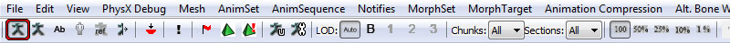

UDN
Search public documentation:
RootMotion
日本語訳
中国翻译
한국어
Interested in the Unreal Engine?
Visit the Unreal Technology site.
Looking for jobs and company info?
Check out the Epic games site.
Questions about support via UDN?
Contact the UDN Staff
中国翻译
한국어
Interested in the Unreal Engine?
Visit the Unreal Technology site.
Looking for jobs and company info?
Check out the Epic games site.
Questions about support via UDN?
Contact the UDN Staff
Root Motion
Overview
It is possible to move actors in the world using mathematical equations. Take the example of a car, a player would accelerate, which would increase the velocity of car, and update its position. You would get the following basic equations: Velocity = Acceletation * DeltaTime;
Position = Velocity * DeltaTime; You can add many other parameters into account, such as friction and gravity, to make the car feel as real as possible. It is fairly easy to simulate accurately mechanical objects, but it is much harder to do so for organic beings. Take for example a human being, a horse or a monkey. Their movement can be very irregular and don't necessarily follow simple enough patterns to simulate them properly with equations. No doubt that in a few years it will be possible to generate realistic procedural movements in real time to be used in games, but for now the most efficient solution is to have the animation drive the movement of the actor. The idea is to have the complex movement baked into the animation, typically this is done on the Root Bone of the skeletal mesh, hence the name: Root Motion. That root bone motion is extracted from the animation and forwarded to the game physics to move the actor. For an overview of the Animation System, please see the Animation Overview page.
Preparing Skeletal Meshes For Root Motion Use
To have a skeletal mesh use root motion, import animations that has its root bone moving. Previewing root motion can be done in the AnimSet Editor.
Previewing Root Motion
In the AnimSet Editor, select the animation you wish to preview. If this is your first time at using the AnimSet Editor, then please have a look at the AnimSet Editor User Guide for a quick overview of the system. Make sure you turn on bone display on the toolbar, you can do it by toggling ON the following button:  This will show the Bones of the SkeletalMesh, along with previewing of the Root Bone. Above is the mesh on its first frame. Below is the mesh in the middle of its animation. You can notice the red line showing the root motion. This is the translation between the first frame of animation, and the current frame. This is the distance that the actor will travel. The purple line shows the translation of root bone to the origin of the mesh. The mesh is not forced to have the root bone start at the origin, but if that was the case, then both red and purple lines would be overlapping.
Using Root Motion In Game
The first thing to do to use root motion in game, is to enable it on an animation node that is capable of playing back animation such as an AnimNodeSequence. This is where you can control the root motion options relative to that animation. Above image shows a very simple AnimTree setup: an AnimNodeSequence configured for Root Motion. Here are the AnimNodeSequence parameters affecting Root Motion.
- bZeroRootRotation - Lock root bone rotation to (0,0,0).
- RootBoneOption[0] - Root Bone Option for mesh local space Axis X.
- RootBoneOption[1] - Root Bone Option for mesh local space Axis Y.
- RootBoneOption[2] - Root Bone Option for mesh local space Axis Z.
- RBA_Default - Default behavior, leave root translation from animation and do no affect owning Actor movement.
- RBA_Discard - Discard any root bone movement, locking it to the first frame's location.
- RBA_Translate - Discard root movement on animation, and forward its velocity to the owning actor.
- It is possible to play several root motion animations at the same time. The root motion will get blended up the tree properly, and then forwarded to the owning actor.
- Root motion supports looping animations properly.
- bForceDiscardRootMotion - Forces Root Bone to be locked at local space origin with 0 rotation.
- bRootMotionModeChangeNotify - Call RootMotionModeChanged() event on owning actor.
- RootMotionMode - Describes how the mesh should use root motion.
- RMM_Ignore - Ignore the root motion and do nothing.
- RMM_Translate - Move the actor right away with root movement delta. This happens instantly after animations, and does NOT use in-game physics. (Will not climb, slide or fall, will not trigger script notifications such as eventBump()).
- RMM_Velocity - Extract magnitude from root motion, and limit max Actor velocity with it. This happens on the next frame and limits owner actor physics. So physics are respected (climb, slide, fall) and script notifications are still sent. In this mode Unreal Physics still provide the motion, and the animation will clamp the velocity's magnitude. This is useful when you want to keep interactive reaction time and/or movement precision. (e.g. pathing,reaching a specific location, good response time w/ input controller).
- RMM_Accel - The root motion is fed directly into the Unreal Physics. This means that the Pawn's acceleration set from pathing/or input is overriden by the animation's root motion. The Unreal Physics will attempt to move the actor to match the animation's root motion. It will support climbing, sliding, falling, etc. This is useful when you want a Pawn to match a complex authored motion, while still respecting the topography and collision of the world.
Seamless Transitions
You'll likely be confronted with transition issues. How to transition from in-game physics movement, to animation movement seamlessly? When setting a new Root Motion Mode on a mesh, it kicks in exactly one tick after the animations have been processed with this new mode. THis is done to prevent any collision with in-game physics which may have already been processed. Depending on the context this can happen at different times, with a couple frames of delay at most. But there are ways to make transitioning seamless and easy.
- RMM_Translate - Depending on when that Mode is set, which could be before or after in-game physics have been processed. It can also be set before or after animations have been computed. One thing we know for sure, Root Motion will be applied exactly 1 tick after animations have been processed with the new mode. To make transitioning easy, there is a flag bRootMotionModeChangeNotify which notifies when the root motion mode is changed. This triggers an event on the owning actor, then able to interpret the transition. When this event is called, when know for sure that Root Motion will be applied on the next tick, so we can take care of transitioning here. You can for example kill the physics movement (player input, acceleration, velocity), and safely assume that root motion will take care of movement from there.
- RMM_Velocity - This mode is always applied with a frame of lag. But because of the same reasons as above, we can guarantee that root motion will be applied the tick after the animations have been computed. Transitioning with this mode is much easier, since one just need to maintain a forced movement on the actor, and wait for root motion to kick-in to limit the magnitude of the velocity. Forcing movement can be done through several means, either by forcing input on the player, using Controller.bPreciseDestination, or controlling the Acceleration/Velocity of the actor.
Examples Of Using Root Motion For Programmers
Here are a few example use cases of root motion.
RBA_Translate Example In Unreal Script
The following sample code, is an example of a Pawn playing a root motion jump animation. Do not try to compile this code as it is, this is just given as an example.
simulated function PlayJumpAnimation(AnimNodeSequence SeqNode)
{
// Play Jump animation
SeqNode.SetAnim('Jump');
SeqNode.PlayAnim(false, 1.f);
// Turn on Root Motion on Animation node
SeqNode.RootBoneOption[0] = RBA_Translate;
SeqNode.RootBoneOption[1] = RBA_Translate;
SeqNode.RootBoneOption[2] = RBA_Translate;
// Tell animation node to notify actor when animation is done playing
SeqNode.bCauseActorAnimEnd = TRUE;
// Tell mesh to use Root Motion to translate the actor
Pawn.Mesh.RootMotionMode = RMM_Translate;
// Tell mesh to notify us when root motion will be applied,
// so we can seamlessly transition from physics movement to animation movement
Pawn.Mesh.bRootMotionModeChangeNotify = TRUE;
}
simulated event RootMotionModeChanged(SkeletalMeshComponent SkelComp)
{
/**
* Root motion will kick-in on next frame.
* So we can kill Pawn movement, and let root motion take over.
*/
if( SkelComp.RootMotionMode == RMM_Translate )
{
Velocity = Vect(0.f, 0.f, 0.f);
Acceleration = Vect(0.f, 0.f, 0.f);
}
// Disable notification
Pawn.Mesh.bRootMotionModeChangeNotify = false;
}
simulated event OnAnimEnd(AnimNodeSequence SeqNode)
{
// Finished Jumping
// Discard root motion. So mesh stays locked in place.
// We need this to properly blend out to another animation
SeqNode.RootBoneOption[0] = RBA_Discard;
SeqNode.RootBoneOption[1] = RBA_Discard;
SeqNode.RootBoneOption[2] = RBA_Discard;
// Tell mesh to stop using root motion
Pawn.Mesh.RootMotionMode = RMM_Ignore;
}